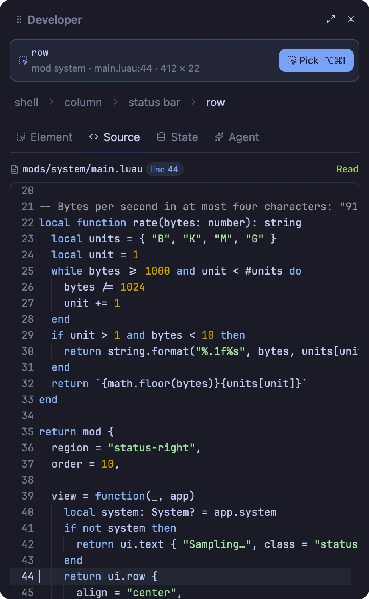
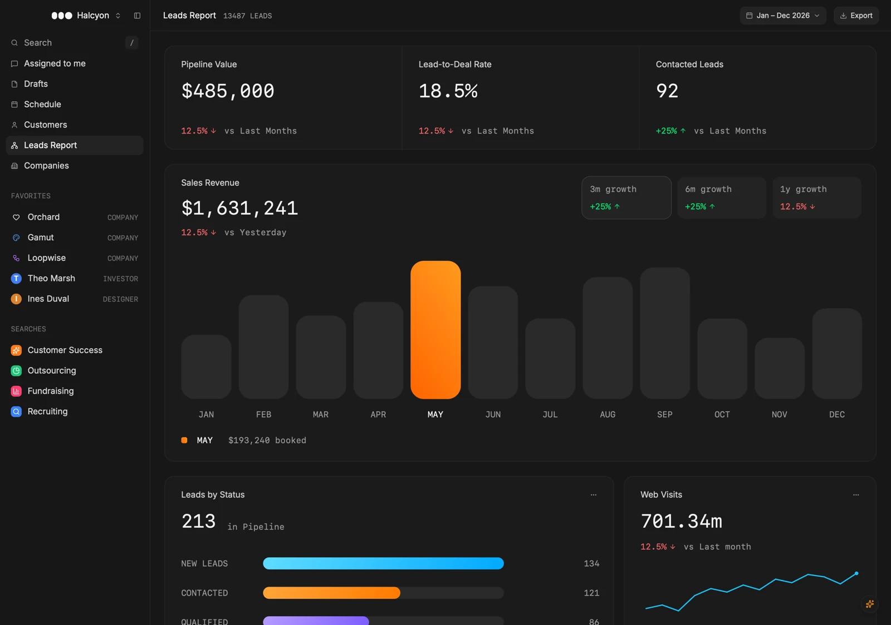
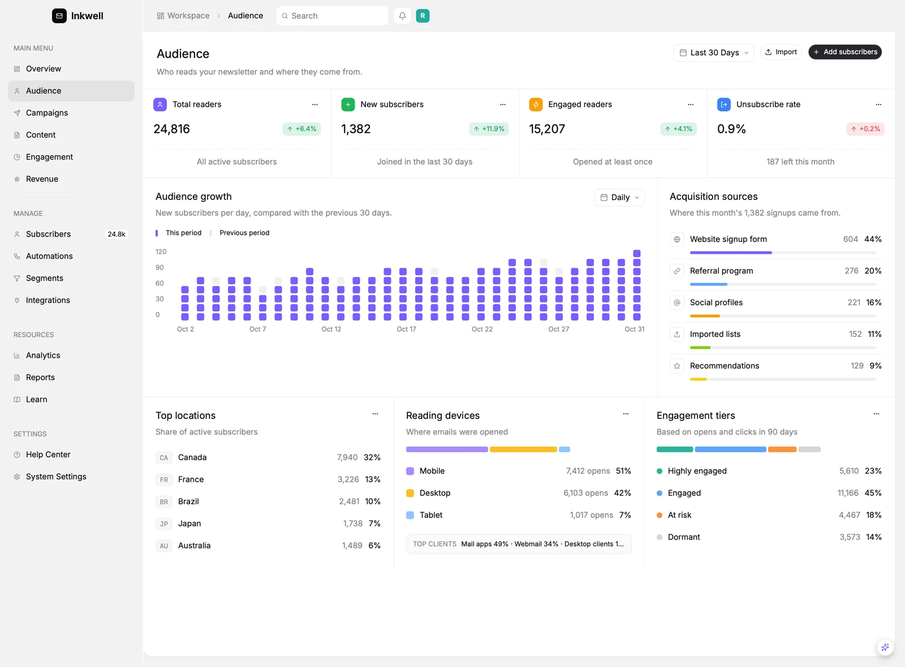
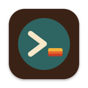
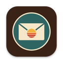
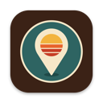

The native desktop app factory
Malleable
software.
Ask for a change and watch the running app reshape itself. Moonframe makes native desktop apps in Rust, drawn by GPUI by default or the experimental Rune renderer. Every panel, toolbar and status bar is a Luau file you or an agent can change while the app runs. Start from its own app, or build whole new ones and ship each as a standalone release. No rebuild, no restart, and your terminals keep running.
running 214 tests
test result: ok. 214 passed
❯ tail -f server.log
GET /health 200 1ms
Fig. 1 An illustration of the loop. The code the agent writes follows the real status bar mods in app/mods/.
The tour
Moonframe in a minute.
An app that changes when you ask it to, the inspector, the Developer tools, coding agents, the live Luau underneath, components, terminals, the sandbox, and the apps built on it.
How you work
Describe it, and see it while it's being built.
Run it once
Clone the starter and open the window. You won't need to close it again.
git clone https://github.com/moonframehq/moonframe cd moonframe && mise install just run
Prompt, and watch
Ask your agent for a panel, a widget, a whole screen. Each file it saves redraws the window in place, with state and terminals kept. A mistake shows as a small warning mark, never a blank window.
› a CPU sparkline in the status bar › move changes to the left › a warmer dark theme
Ship it
Build a .app, a Linux prefix or a Windows zip, signed and attested.
just bundle just install # into /Applications
Inspect anything
Point at it. Ask for a change.
Inspect Element picks any part of the window, like a browser's developer tools, and tells your agent which file and line drew it.
- Inspect. ⌥⌘I, then click. The selection is saved where the agent reads it.
- Ask. "Add a list of branches here." The bundled skill tells it where that belongs.
- Check.
just checkandjust typescatch mistakes first. - Watch. The window redraws in place, sandboxed throughout.

ui.list fed by the git provider to the explorer. ✓ just check passed
Mockups
See it before it's made.
Ask for "three takes on the status bar" and they're drawn live, side by side, in a tab of your window. Pick one; nothing real changes until then.
Developer tools
Edit it where it's drawn.
⌥⌘J docks the pick beside the window: the element and what holds it, its mod's Luau in a code editor at the line that drew it, the mod's live state, and your agent sessions. ⌘S saves, and the window reloads in place. On in every build until you turn Developer Mode off.

Components
A whole catalogue, ready to use.
Calendars, tables, command palettes, charts, chat, diffs, kanban columns and more. Browse them in the app's Components window with a live preview, the Luau to paste, and Copy for agent.
Fig. 2 The Components window, here in the page: click any of the 142. Names, descriptions, props and code come from app/components; each preview is a capture of the app, which shows them all live.

Week calendar. Day, week and month, with events.

Command palette. Spotlight, classic, compact or cards.

Table. Sortable, filterable, paged.

Notification drawer. Behind a bell, with a badge.
The plates
Every one of these is built on Moonframe.
Whole apps install beside the starter as profiles, each with its own shell, mods, menus, icon and theme, and bundle into a standalone release.
Two renderers · the same Luau
GPUI by default. Rune, experimentally.
Your mods, components and stylesheet build one checked tree. GPUI draws it in the apps we ship. The experimental Rune backend draws that same Luau in a separate build that links no GPUI.


just rune-app emberline

just rune-app audienceCaptured with Rune's own headless renderer from the unmodified example apps. Capture commands →
Try it from source
From a checkout with mise install complete. The renderer is chosen at build time; installed apps and published releases use GPUI.
just rune # the starter on Rune just rune-gallery # live component demos just rune-app # list example apps
Experimental means in progress
Rune has live reload, providers, saved state, profiles and terminals. Layouts can differ; named themes, animations, separate mod windows and much of the CLI are still missing. Backend guide → · Component coverage →
What you get · the default GPUI build
Rust underneath, nothing hidden on top.
Rust, with GPUI or Rune
Rust checks every element tree Luau returns and owns everything that touches the machine. GPUI is the default renderer; Rune is experimental.
Laid out in Luau
A shell places regions and mods fill them. Each mod is one file with its own state, init, update and view, like an Elm program.
A stylesheet
Colors, corners, shadows, spacing, fonts and animations, by type and class, with hover states and transitions.
Themes
Bundled color schemes reach the window, its controls and the terminals.
Terminals
Your login shell on alacritty_terminal or Ghostty's libghostty-vt.
Providers
Sandboxed WebAssembly (WASM), plain processes or Rust built into the app publish JSON that views read as app.<name>. Build a WASM provider →
Sandboxed by default
Luau mods and WASM providers get no files, network or processes, with a memory cap and an instruction budget. Building a provider from source still runs Cargo as you, so read what it builds first.
Your folder over the app
~/.config/moonframe holds your own mods and stylesheet; updates never touch it.
A library
Or skip the starter and host Moonframe in your own Rust app.
“Clone it, rename it, and build anything, by hand or by asking an agent while the app runs.”
Get started
Where are you starting from?
Install Moonframe, try one of the apps built on it, or build your own below. The documentation goes further: how mods, providers and apps fit together, where things go, and each platform.
Moonframe.app in /Applications and the moonframe command. macOS 13 or later; Linux and Windows on the releases page.
Eleven Moonframe apps install on their own, each an app of its own, with no checkout and nothing else to set up. Pick one:
On Linux and Windows, each release's apps release has a tarball or zip per app: unpack it anywhere and run the app inside.
Paste this into Claude Code, Codex or any coding agent, in your project. llms.txt tells it how to tell a Rust crate from a new app, what to run, and how to check its work.
or build with it
Make the app yours.
- I
Open it
Turn on Developer Mode in the app menu for Inspect Element, Components and reloads.
- II
Ask an agent to change it
It opens in a tab of the window, in your folder; you watch it work as the window changes. Updates never touch your folder.
- III
Add a mod from git
Source only, so you can read it first.
- IV
Or a whole app
Runs beside the starter as its own profile.
The app offers to copy its skills into your folder, so the agent knows how to build in it. More on working with an agent, mods from git and apps as profiles.
Four commands to a running window.
- I
Clone the starter
Name the folder after your app.
- II
Step inside
Everything else runs from here.
- III
Install the toolchain
mise fetches Rust, and Zig for the Ghostty terminal.
- IV
Open the window
Then ask your agent for anything; the window changes as it saves.
You need rustup, just and mise. Developed on macOS; CI builds Linux and Windows too. More in the quick start.
Your crate, Moonframe's window.
- I
Write the app folder
From your crate's root:
app/, Luau types and the agent skills. It never touchesCargo.tomlorsrc/. - II
Depend on it
Also add the
opt-level = 2linesinitprinted: GPUI and Luau are slow unoptimised.Cargo.lockpins the commit. - III
Hand it main, last
Your own setup first, then end
mainwith Moonframe. Your Rust publishes data as a provider, plain orasyncon tokio. The async one also needsreqwestandtokio:[dependencies] reqwest = { version = "0.12", features = ["json"] } tokio = { version = "1", features = ["macros", "rt-multi-thread"] }Sync · src/main.rs use moonframe::{Data, Handle, Moonframe, Native}; #[derive(Default)] struct Vault { unread: i64 } impl Native for Vault { fn start(&mut self, host: &Handle) -> Result<(), String> { self.tick(host); Ok(()) } // Every `interval` seconds of its provider.toml. fn tick(&mut self, host: &Handle) { host.publish(Data::map([("unread", self.unread.into())])); } // A mod sent { read = true } to "provider:vault". fn receive(&mut self, host: &Handle, _from: &str, msg: Data) { if msg.get("read").and_then(Data::as_bool) == Some(true) { self.unread = 0; self.tick(host); } } } fn main() -> std::process::ExitCode { // 1. Your own setup first: config, flags. // (Moonframe sets up logging itself.) // 2. Moonframe last: run() holds the main thread // until the window closes. Moonframe::new("my-app") .app_dir(concat!(env!("CARGO_MANIFEST_DIR"), "/app")) .native("vault", Vault::default) .run() }Async, on tokio · src/main.rs use moonframe::{AsyncNative, Handle, Moonframe}; const URL: &str = "https://api.open-meteo.com/v1/forecast\ ?latitude=48.85&longitude=2.35¤t=temperature_2m"; #[derive(Default)] struct Weather { client: reqwest::Client } impl AsyncNative for Weather { // start and receive do nothing unless you write them. async fn tick(&mut self, host: &Handle) { match self.client.get(URL).send().await { Ok(reply) => { let json = reply.json().await.unwrap_or_default(); host.publish_json(&json); }, Err(error) => host.fail(error.to_string()), } } } // run() takes the multi-thread runtime it is called in. #[tokio::main] async fn main() -> std::process::ExitCode { // 1. Your own setup first: pools, clients, on tokio. // 2. Moonframe last. Views await tokio work // with moonframe::on_runtime. Moonframe::new("my-app") .app_dir(concat!(env!("CARGO_MANIFEST_DIR"), "/app")) .native_async("weather", Weather::default) .run() } - IV
Start it, and draw it
A provider runs once its folder says how often, and Luau reads what it publishes as
app.<name>. The asyncweathergets the same folder, withinterval = 600.0.provider.toml # app/providers/vault/provider.toml # Shared as app.vault, from .native("vault", ...). kind = "native" interval = 5.0 # seconds between ticksLuau -- app/main.luau, or any mod's view view = function(state, app) local vault = app.vault or { unread = 0 } return ui.row { ui.text { `{vault.unread} unread` }, ui.button { "Mark read", msg = { read = true }, to = "provider:vault", }, } end, - V
Run it
Edit
app/while it runs; it reloads live.
See it done in msgvault, a mail archive reader on the library. More in the library guide.
Experimental apps
Real apps, still being built.
Three apps in progress on Moonframe, rough edges included. Read how they're made, or follow along.

Moonmux
A workspace for terminals and coding agents. Every shell and agent keeps running when the window closes.
- Spaces, split panes and an agents sidebar
- Files and Changes panels
- Terminals kept in herdr-core or tmux

Moonmail
A local-first mail client built around a separate Correspondence pane, with search, IMAP sync and SMTP sending.
- Correspondence beside the reader
- Persistent, searchable local mail
- Multi-provider sign-in, IMAP and SMTP

Moonmap
A desktop map app with switchable tile providers, place sheets and directions.
- Switchable tile providers
- Search with results pinned on the map
- Place sheets and directions